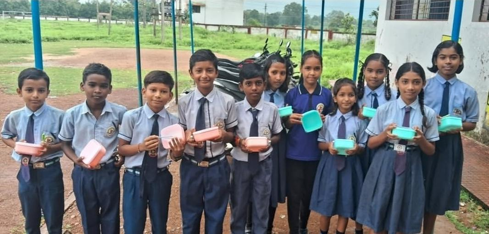
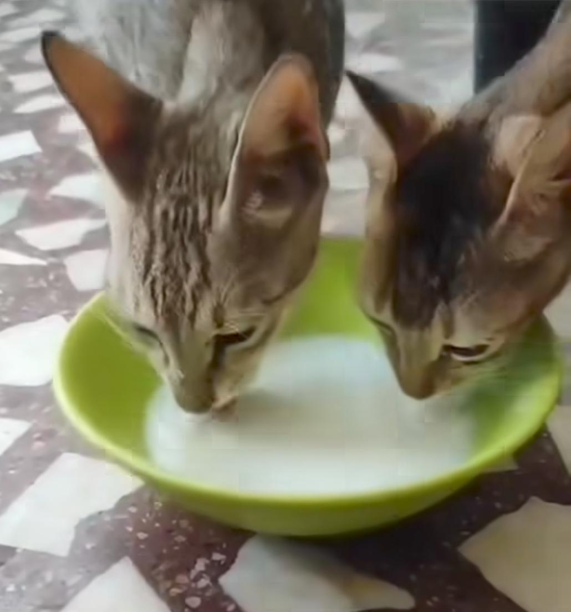

"I give not because I have much — but because I know a little can mean everything to someone else."
Founded on September 23, 2020, by Mr. Govind Shukla (Founder & CEO), InAmigos Foundation is a licensed non-profit organization established under Section 8 of the Central Government’s Companies Act.
We operate transparently with structured social pathways, ensuring every contribution goes directly to where it is needed most. Join our community to take your first steps in volunteering.
To deliver self-sustaining positive change across underprivileged sectors through structured programs in food distribution, child education, women skill workshops, and animal welfare drives.
To foster an inclusive, empathetic, and empowered community where basic needs are protected, ecosystems are conserved, and every youth is equipped to shape a brighter future.
Every project is a thread in the same fabric of change.
Driving national sustainability through tree planting, ecological protection, and environmental awareness across India's landscapes.
Animal welfare through daily feeding of 50+ strays, rescue operations, medical care, and building community compassion.
Small initiatives, great impact.

Advanced skill workshops and internship training preparing youth for professional careers.

Establishing computer labs and supply donations in rural primary schools.

Volunteers organizing tree plantation drives in urban forest areas.

Nutritious food distributions conducted daily in temporary community shelters.

Skill development workshops helping women gain tailoring credentials.

Providing medical checks and roadside shelters made from cardboard and recycled cushions for community strays.

Youth employability workshops in computer literacy and communications.

Providing daily food and clean drinking water to community strays.
Every act of service creates ripples. Read direct experiences from our core volunteers.
Your small step can create a big impact.
Fill out the details below, and our team will get in touch with you shortly.